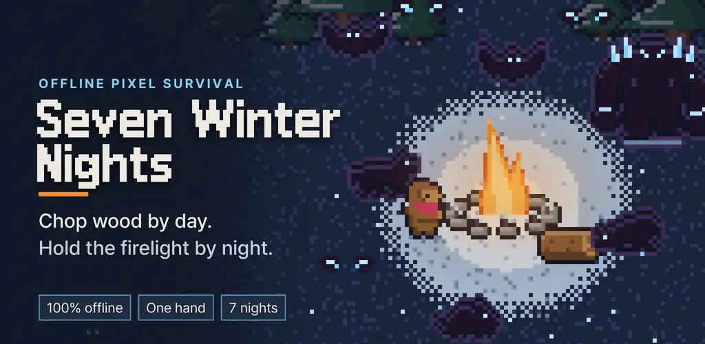
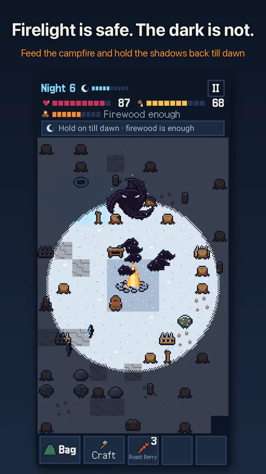
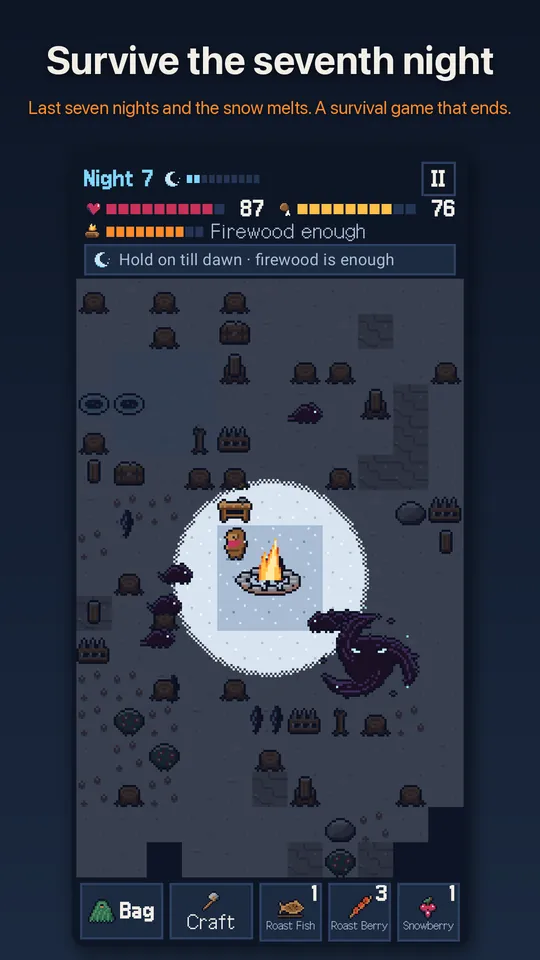
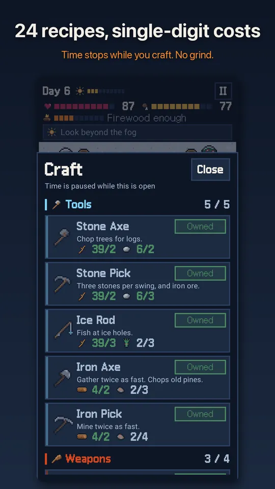
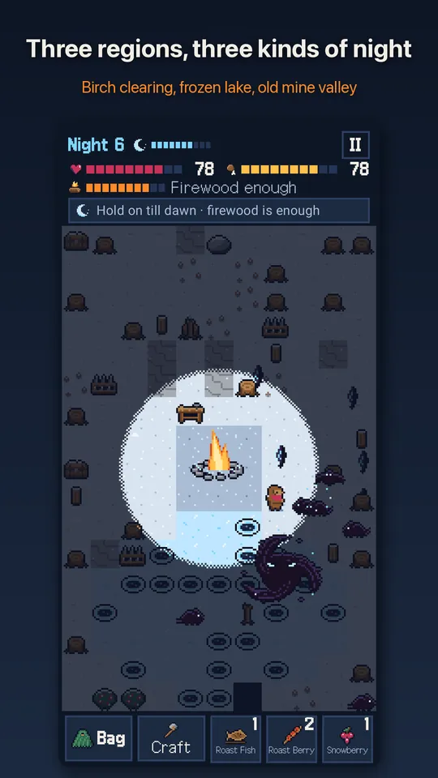
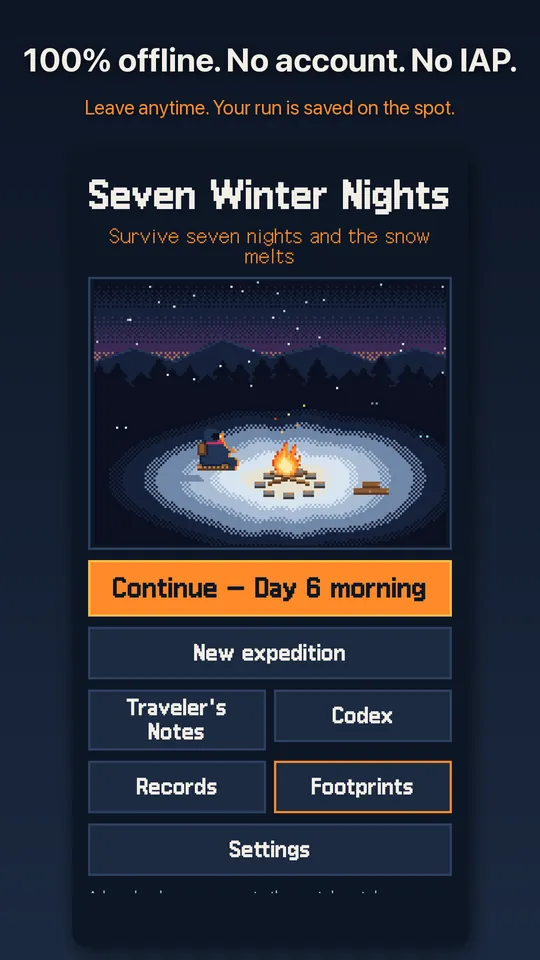

Pixel Survival: Winter Nights
Offline pixel survival. Chop wood by day, guard the campfire for 7 winter nights






About this app
A snowbound mountain clearing. One campfire, burning low.
By day, chop trees, mine stone and craft tools. When the sun sets, get back inside the firelight and hold off the shadows of the night.
Survive the seventh night and the snow melts, opening the mountain path.
Offline, no account, progress saved on your device
- A survival game in pixel art that you can play from start to finish without internet. No login, no server.
- The game saves automatically every dawn and whenever you leave the app. Quit in the middle of a night and you continue from that exact moment.
Portrait, one hand, one tap
- Tap the ground to walk there. Tap a tree or rock and your traveler keeps working until it is done.
- Press and drag to have your traveler follow your finger. Attacks are automatic. No virtual joystick.
Light is the rule
- Inside the firelight you are warm and safe. Outside it is cold and dangerous.
- Run out of fuel and the fire goes out. The HUD tells you how many more logs you need to reach dawn, so you always know what to do today.
Three minutes a day, seven days an expedition
- 100-second days and 60 to 90-second nights. Play a single day and stop whenever you like.
- Each dawn, pick 1 of 3 cards. All 12 dawn cards give you something good along with a price to pay.
Gather, build, endure
- 10 resources and 24 craftable items: stone axe and pickaxe, ice fishing rod, stone spear and iron sword, grass cloak, fences, spike traps, torch posts and campfire upgrades II to V.
- Every recipe is visible from the start, and every material cost is a single digit.
Shadows of the night
- Shadow rats, shadow wolves, shadow bats, ash thieves, the frost giant, and on the seventh night, the Long Night. Six kinds in all.
- Defeated shadows scatter into blue sparks. No blood.
- Three regions: Birch Clearing, Frozen Lake and Old Mine Valley, each short on something different.
What remains when you fall
- When you fall, a note is left in the clearing. The next traveler picks it up and starts with a bonus (8 traveler's notes to find).
- A 43-entry codex, 32 Footprints in the Snow (achievements) and your records.
- Share your camp at dawn as a single picture.
About ads
- No ads on the expedition screen while you play through the day and night.
- Interstitial ads appear only at three fixed points: when you start an expedition, and when day 4 and day 7 begin. Never on your first expedition after installing.
- Rewarded ads ("Back to this morning" and "Supply crate") play only when you tap the button yourself, and you can finish the game without them.
- Banner ads appear at the bottom of the home, region, notes, codex, footprints, records, settings and results screens.
- No in-app purchases, no loot boxes, no premium currency.
- If you allow notifications, you get one expedition update a day at 5:55 PM.
Nothing in this game is real-world survival advice. All regions, berries and creatures are fictional.
Contact: thefacegood1@gmail.com
Android · free with ads · Developer: RealTunaLove · Store listing in 17 languages
Background story: why I built it